(George Sicherman)
(Bryce Herdt)
(George Sicherman)
(Joe DeVincentis)


(George Sicherman)
(George Sicherman)
(Joe DeVincentis)
Here are the best known solutions.
| 1 | 2 | 3 | 4 | 5 | 6 | 7 | 8 | 9 | 10 |
|---|---|---|---|---|---|---|---|---|---|
| 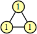 | 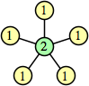 | 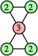 | 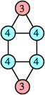 | 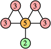 | 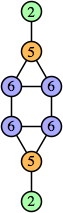 | 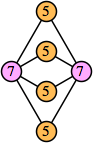 | 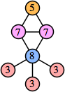 | 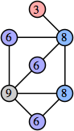 | 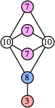 |
| 11 | 12 | 13 | 14 | 15 | 16 | 17 | 18 | 19 | 20 |
| 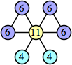 | 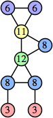 | 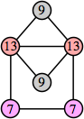 | 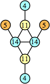 | 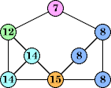 (George Sicherman) | 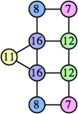 | 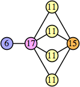 | 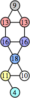 | 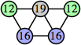 | 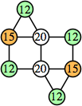 |
| 21 | 22 | 23 | 24 | 25 | 26 | 27 | 28 | 29 | 30 |
| 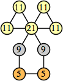 | 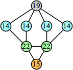 | 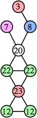 | 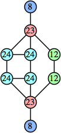 | 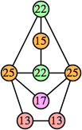 (Bryce Herdt) | 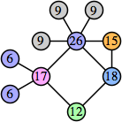 | 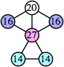 | 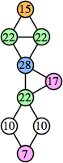 | 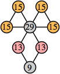 | 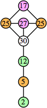 |
| 31 | 32 | 33 | 34 | 35 | 36 | 37 | 38 | 39 | 40 |
| 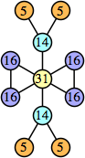 | 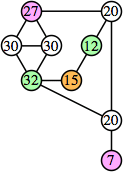 | 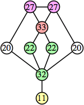 | 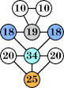 (George Sicherman) | 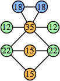 | 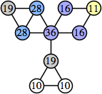 (Joe DeVincentis) | 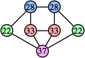 |
| 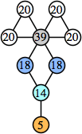 | 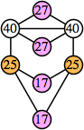 |
| 41 | 42 | 43 | 44 | 45 | 46 | 47 | 48 | 49 | 50 |
(George Sicherman) | 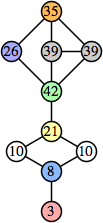 | 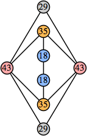 | 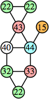 | 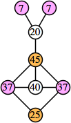 | 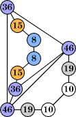 (George Sicherman) | 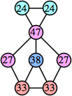 | 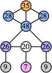 | 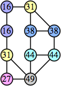 | 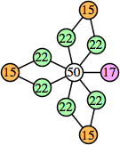 (Joe DeVincentis) |
| 1 | 2 | 3 | 4 | 5 | 6 | 7 | 8 | 9 | 10 |
|---|---|---|---|---|---|---|---|---|---|
| 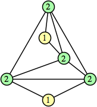 | 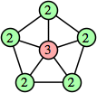 | (Bryce Herdt) | (George Sicherman) | ||||||
| 11 | 12 | 13 | 14 | 15 | 16 | 17 | 18 | 19 | 20 |
(Bryce Herdt) | (George Sicherman) | (Bryce Herdt) | |||||||
| 21 | 22 | 23 | 24 | 25 | 26 | 27 | 28 | 29 | 30 |
(George Sicherman) | (George Sicherman) | (Bryce Herdt) | (George Sicherman) | ||||||
| 31 | 32 | 33 | 34 | 35 | 36 | 37 | 38 | 39 | 40 |
(George Sicherman) | (Bryce Herdt) | ||||||||
| 41 | 42 | 43 | 44 | 45 | 46 | 47 | 48 | 49 | 50 |

| (George Sicherman) |  (George Sicherman) | (George Sicherman) |
| 1 | 2 | 3 | 4 | 5 | 6 | 7 |
|---|---|---|---|---|---|---|
| 8 | 9 | 10 | 11 | 12 | 13 | 14 |
| 15 | 16 | 17 | 18 | 19 | 20 | 21 |
(George Sicherman) | (George Sicherman) | (George Sicherman) | (Joe DeVincentis) | (George Sicherman) | ||
| 22 | 23 | 24 | 25 | 26 | 27 | 28 |
(George Sicherman) | (George Sicherman) | (George Sicherman) | (George Sicherman) | |||
| 29 | 30 | 31 | 32 | 33 | 34 | 35 |
(Joe DeVincentis) | (George Sicherman) | (George Sicherman) | (George Sicherman) | (George Sicherman) | ||
| 36 | 37 | 38 | 39 | 40 | 41 | 42 |
 (Bryce Herdt) | (George Sicherman) | (Joe DeVincentis) | ||||
| 43 | 44 | 45 | 46 | 47 | 48 | 49 |
(George Sicherman) | 
| (Joe DeVincentis) | (George Sicherman) | (George Sicherman) | (George Sicherman) | |
| 50 | ||||||
| 1 | 2 | 3 | 4 | 5 | 6 |
|---|---|---|---|---|---|
(George Sicherman) | (George Sicherman) | (George Sicherman) | (George Sicherman) | ||
| 7 | 8 | 9 | 10 | 11 | 12 |
(George Sicherman) | (George Sicherman) | ||||
| 13 | 14 | 15 | 16 | 17 | 18 |
(George Sicherman) | (George Sicherman) | (Joe DeVincentis) | 
| (George Sicherman) | |
| 19 | 20 | 21 | 22 | 23 | 24 |
(George Sicherman) | (George Sicherman) | ||||
| 25 | 26 | 27 | 28 | 29 | 30 |
(George Sicherman) | (Joe DeVincentis) | ||||
| 31 | 32 | 33 | 34 | 35 | 36 |
(George Sicherman) | (George Sicherman) | (George Sicherman) | 
| ||
| 37 | 38 | 39 | 40 | 41 | 42 |
(Joe DeVincentis) | (George Sicherman) | ||||
| 43 | 44 | 45 | 46 | 47 | 48 |
(George Sicherman) | |||||
| 49 | 50 | ||||
(Joe DeVincentis) |
| 1 | 2 | 3 | 4 | 5 |
|---|---|---|---|---|
(Joe DeVincentis) | (Joe DeVincentis) | |||
| 6 | 7 | 8 | 9 | 10 |
(Bryce Herdt) | (Bryce Herdt) | (Joe DeVincentis) | ||
| 11 | 12 | 13 | 14 | 15 |
(George Sicherman) | (Joe DeVincentis) | (Bryce Herdt) | (Joe DeVincentis) | (George Sicherman) |
| 16 | 17 | 18 | 19 | 20 |
(George Sicherman) | (Joe DeVincentis) | (George Sicherman) |  (George Sicherman) | |
| 21 | 22 | 23 | 24 | 25 |
(George Sicherman) | (Joe DeVincentis) | (George Sicherman) | (George Sicherman) | |
| 26 | 27 | 28 | 29 | 30 |
(George Sicherman) | (Joe DeVincentis) | (Joe DeVincentis) | (Bryce Herdt) | (George Sicherman) |
| 31 | 32 | 33 | 34 | 35 |
(Joe DeVincentis) | (Joe DeVincentis) | (George Sicherman) | (Joe DeVincentis) | (Joe DeVincentis) |
| 36 | 37 | 38 | 39 | 40 |
(George Sicherman) | (George Sicherman) | (George Sicherman) | (George Sicherman) | (George Sicherman) |
| 41 | 42 | 43 | 44 | 45 |
(Joe DeVincentis) | (Joe DeVincentis) | (George Sicherman) | (George Sicherman) | (George Sicherman) |
| 46 | 47 | 48 | 49 | 50 |
(George Sicherman) | (Joe DeVincentis) | (George Sicherman) |  (George Sicherman) | (George Sicherman) |
| 1 | 2 | 3 | 4 |
|---|---|---|---|
| none | (Bryce Herdt) | (Bryce Herdt) |  (Bryce Herdt) |
| 5 | 6 | 7 | 8 |
(Joe DeVincentis) | (Joe DeVincentis) | (George Sicherman) | |
| 9 | 10 | 11 | 12 |
(George Sicherman) | (Bryce Herdt) | (Joe DeVincentis) | (George Sicherman) |
| 13 | 14 | 15 | 16 |
(Bryce Herdt) | (George Sicherman) | (George Sicherman) | (George Sicherman) |
| 17 | 18 | 19 | 20 |
(George Sicherman) | (Joe DeVincentis) | (Bryce Herdt) | (Joe DeVincentis) |
| 21 | 22 | 23 | 24 |
(Joe DeVincentis) | (Joe DeVincentis) | (Joe DeVincentis) | (Joe DeVincentis) |
| 25 | 26 | 27 | 28 |
 (Joe DeVincentis) | (Joe DeVincentis) | (George Sicherman) | (Joe DeVincentis) |
| 29 | 30 | 31 | 32 |
(Joe DeVincentis) | (George Sicherman) | (Bryce Herdt) | (Joe DeVincentis) |
| 33 | 34 | 35 | 36 |
(Joe DeVincentis) | (Joe DeVincentis) | (Joe DeVincentis) | (George Sicherman) |
| 37 | 38 | 39 | 40 |
(Joe DeVincentis) | (Joe DeVincentis) | (George Sicherman) | (George Sicherman) |
| 41 | 42 | 43 | 44 |
(Joe DeVincentis) | (Joe DeVincentis) | (Joe DeVincentis) | (Joe DeVincentis) |
| 45 | 46 | 47 | 48 |
(George Sicherman) | (Joe DeVincentis) | (George Sicherman) | (Joe DeVincentis) |
| 49 | 50 | ||
(Joe DeVincentis) | (George Sicherman) |
| 1 | 2 | 3 | 4 | 5 |
|---|---|---|---|---|
 (George Sicherman) |  (George Sicherman) | (George Sicherman) | (George Sicherman) |  (George Sicherman) |
Joe DeVincentis showed that there are 3n–1 solutions for every n, by generalizing the graphs below:
Bryce Herdt showed that there are 5n–1 solutions for every n. Start with a square anti-prism of n's. Build rings of n–1's to 1's outward from the outer ring, and inward from the inner ring. Connect each k to two k–1's (only one when k=n, and none when k=1). The first two graphs in this sequence are shown below:
 |
This construction can be modified to give a 4n–1 solution for every n. Omit one edge from every vertex to a similarly labeled vertex.
If you can extend any of these results, please e-mail me. Click here to go back to Math Magic. Last updated 6/1/17.